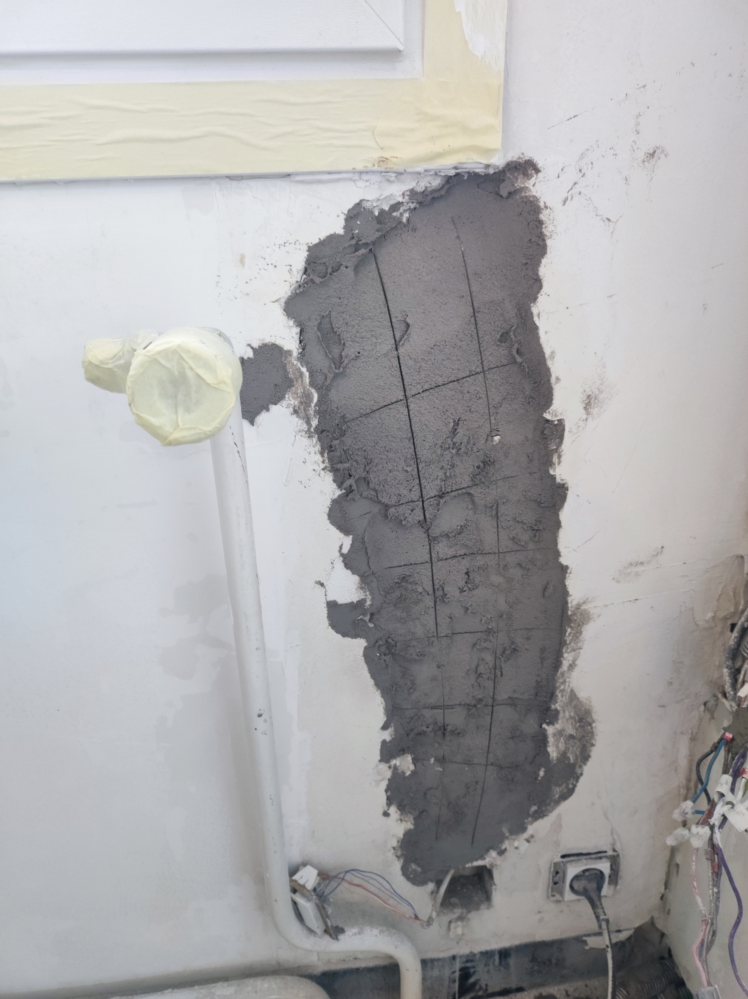

Réparation durable de toutes fissures
Qu'il s'agisse de microfissures de retrait, de fissures sur cloisons, plafonds ou façades extérieures, un traitement adapté est indispensable pour éviter les infiltrations et redonner un aspect parfaitement lisse à vos supports.


Nos réalisations en traitement de fissures


Nos méthodes d'intervention
- Diagnostic de la nature et de l'activité de la fissure
- Ouverture en V, dépoussiérage et primaire d'accrochage
- Rebouchage au mastic souple ou enduit fibré haute résistance
- Pose de bande armée / toile de verre anti-fissuration
- Ratissage complet, ponçage et remise en peinture invisible
- Traitement hydrofuge et imperméabilisation en façade
Bon à savoir : Un traitement réalisé dans les règles de l'art empêche la réapparition de la fissure et protège durablement votre bâti contre l'humidité.